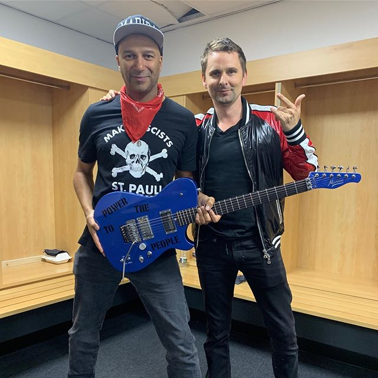
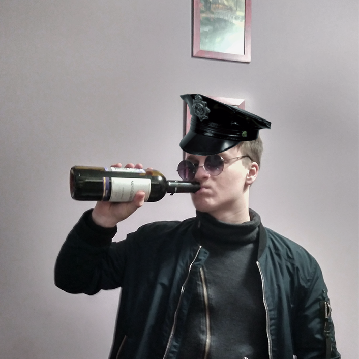
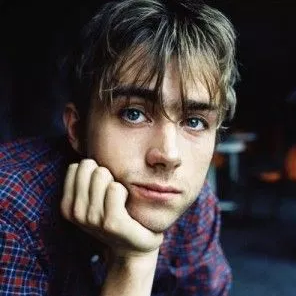
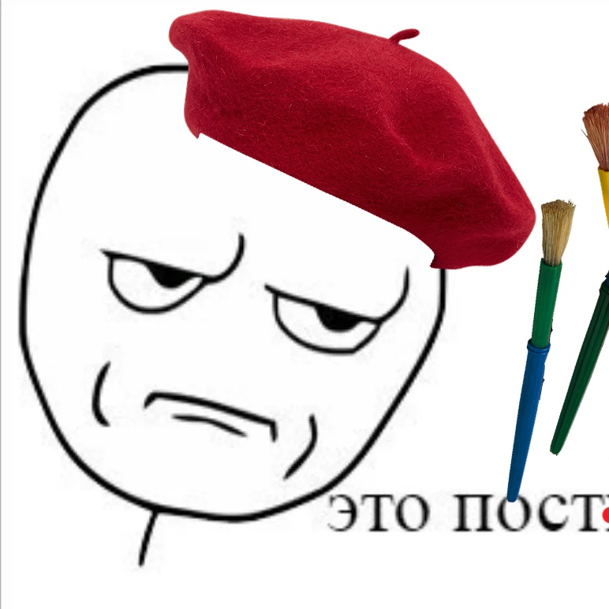
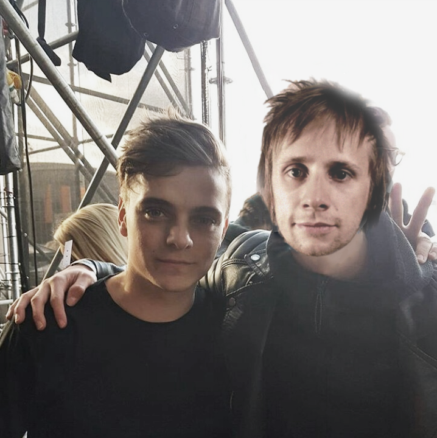

Самые обсуждаемые новости за неделю

Дед и батя сцепились по пьяни, каждый праздник одно и то же
Том Морелло наконец-то выступил с Muse: откровения свидетелей

Барабанщик psycho reapers бесследно пропал
Расследование: почему остальные члены группы так долго игнорировали исчезновение Матвея Беломорцева

Дэймон Албарн создаёт очередной сольный проект
Как человек, у которого больше проектов, чем у автора счастливых воспоминаний, ещё не устал от постоянных творческих перерывов
Лидер группы The Squatties арестована за хранение наркотиков
Секс, наркотики, и рок-н-ролл, но теперь Сандре Хёрниг грозит штраф или два года тюремного заключения

Nickelback всё ещё говно
Новые доказательства

Слухи: Мартин Гаррикс подался в рок?
Активно обсуждается фотография всемирно известного диджея с Домиником Ховардом. Новый совместный проект?